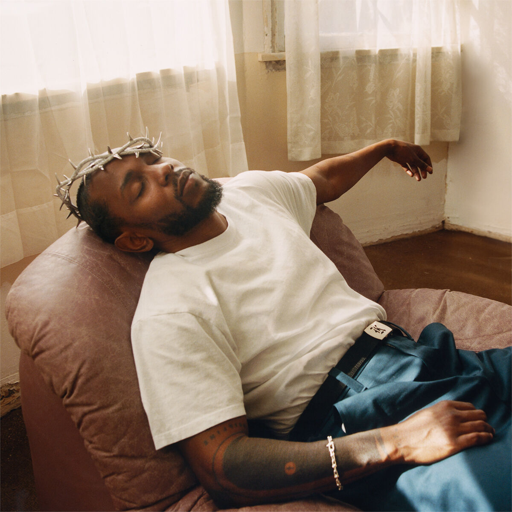

Kendrick Lamar
Kendrick Lamar Duckworth (born June 17, 1987) is an American rapper and songwriter. Regarded as one of the most influential hip hop artists of his generation, and one of the greatest rappers of all time, he is known for his technical artistry and complex songwriting. He was awarded the 2018 Pulitzer Prize for Music, becoming the first musician outside of the classical and jazz genres to be honored.
Lamar began releasing music under the stage name K.Dot while he was attending high school. He signed with Top Dawg Entertainment (TDE) in 2005, where he co-founded the hip hop supergroup Black Hippy. Following the success of his alternative rap debut album Section.80 (2011), Lamar secured a joint contract with Dr. Dre's Aftermath Entertainment and Interscope Records. He rose to prominence with his gangsta rap-influenced second album Good Kid, M.A.A.D City (2012), which became the longest-charting hip hop studio album in the Billboard 200's chart history. To Pimp a Butterfly (2015), Lamar's third album, embraced historical African-American music styles such as jazz and funk. It became his first of five consecutive number-one albums on the Billboard 200 chart, and was one of the most critically acclaimed albums of the 2010s.
In 2015, Lamar garnered his first number-one song on the Billboard Hot 100, after featuring on the remix of Taylor Swift's "Bad Blood". His critical and commercial success continued with his R&B and pop-leaning fourth album Damn (2017), yielding his second Hot 100 number-one single, "Humble". He curated original songs for the soundtrack album of the 2018 film Black Panther, earning a nomination for the Academy Award for Best Original Song for the US and UK top-ten single "All the Stars" (with SZA). Lamar's 2022 double album Mr. Morale & the Big Steppers concluded his tenure with TDE and Aftermath. His feud with Drake and sixth album GNX (2024) spawned the Hot 100 number-ones "Like That", "Not Like Us" and "Squabble Up".
Lamar has received various accolades throughout his career, including 17 Grammy Awards (the third-most won by a rapper), a Primetime Emmy Award, a Brit Award, four American Music Awards, six Billboard Music Awards, 11 MTV Video Music Awards (including two Video of the Year wins) and 37 BET Hip Hop Awards (the most won by any artist). Time listed him as one of the 100 most influential people in the world in 2016. Two of his concert tours, the Damn Tour (2017–2018) and the Big Steppers Tour (2022–2024), are amongst the highest-grossing rap tours in history. Three of his works were included in Rolling Stone's 2020 revision of the 500 greatest albums of all time. Outside of music, Lamar co-founded the creative company PGLang and ventured into film with his creative partner, Dave Free.
Myndir af Kendrick
2003–2008: Career beginnings
During high school, Lamar adopted the stage name K.Dot and began freestyling and battle rapping at school.[1] His performances caught the attention of fellow student Dave Free, who traveled from Inglewood to watch him rap.[1] They quickly formed a friendship over their love of hip hop and the television sitcom Martin.[1] They recorded music together at Free's makeshift garage studio and at his older brother's Hyde Park apartment.[1] Lamar's earliest performances were held at a "super hood" comedy club and behind a tattoo parlor.[1] Free was his hype man during that time, while his older brother was his manager and disc jockey.[1] Lamar recorded five mixtapes throughout the 2000s; his first, Youngest Head Nigga in Charge (Hub City Threat: Minor of the Year), was released on April 15, 2003, through Konkrete Jungle Musik.[27] The mixtapes primarily consisted of freestyles over the production of popular hip hop songs.[27]
Mynd með gegnsæjum bakgrunni
Early life
Kendrick Lamar Duckworth was born on June 17, 1987, in Compton, California.[1] He is the first child of former gang hustler Kenneth "Kenny" Duckworth and hairdresser Paula Oliver.[2] Both of his parents are African Americans from the South Side of Chicago.[2] When they were teenagers, they relocated to Compton in 1984, due to his father's affiliation with the Gangster Disciples.[3] Lamar was named after singer-songwriter Eddie Kendricks of the Temptations.[4] He was an only child until the age of seven and was described as a loner by his mother.[2][5] Eventually, his parents had his two younger brothers and younger sister, businesswoman Kayla Sawyer (née Duckworth).[6] His cousins include basketball player Nick Young and rapper Baby Keem.[7][8]
Lagið Momma
Lamar and his family lived in Section 8 housing, were reliant on welfare and food stamps, and experienced homelessness.[9][10] Although he is not a member of a particular gang, he grew up with close affiliates of the Westside Pirus.[3] Despite suffering hardships, Lamar remembered having "good memories" of his childhood that sparked his interest in hip hop music, such as sneaking into his parents' house parties.[2][11] He was raised secular, although he occasionally attended church services and was taught the Bible by his grandmother.[12] He felt "spiritually unsatisfied" as a child due to the "empty" and "one-sided" nature of the sermons.[13]
Born
Kendrick Lamar Duckworth
June 17, 1987 (age 37)
Compton, California, U.S.
Other names
K.Dot
Occupations
Rapper, songwriter, filmmaker, entrepreneur and philanthropist
Years active
2003-present
Works
Albums[a], singles, songs, videos, performances
Partner
Whitney Alford (eng. 2015)
Children
2
Relatives
Baby Keem (cousin)
Nick Young (cousin)
Awards
Full list
2009–2011: Overly Dedicated and Section.80
Lamar's third mixtape C4, released on January 30, 2009, is a tribute project to Lil Wayne's Tha Carter III (2008) and was supported by his co-sign.[35] Reeves felt that the mixtape was a "wrongheaded homage to a year-old, well-worn album."[27] From February to July, he toured with the Game on his LAX Tour as a hype man for Jay Rock.[36][37] Lamar disliked how his stage name diverted attention away from his true identity, and decided to retire it.[38] He opted to use his first and middle names professionally and regards the name change as part of his career growth."[39] For his eponymous debut extended play (2009),[40] Lamar eschewed the creative process of his mixtapes in favor of a project heavily focused on his songwriting over "lovely yet doleful" production.[27] Reeves described the EP as the "first standout project" of his career, praising its melancholic tone.[27] He felt that the project restored his reputation following the sting of criticism he received over C4.[27]
Undirskrift
© 2024 SRK
°